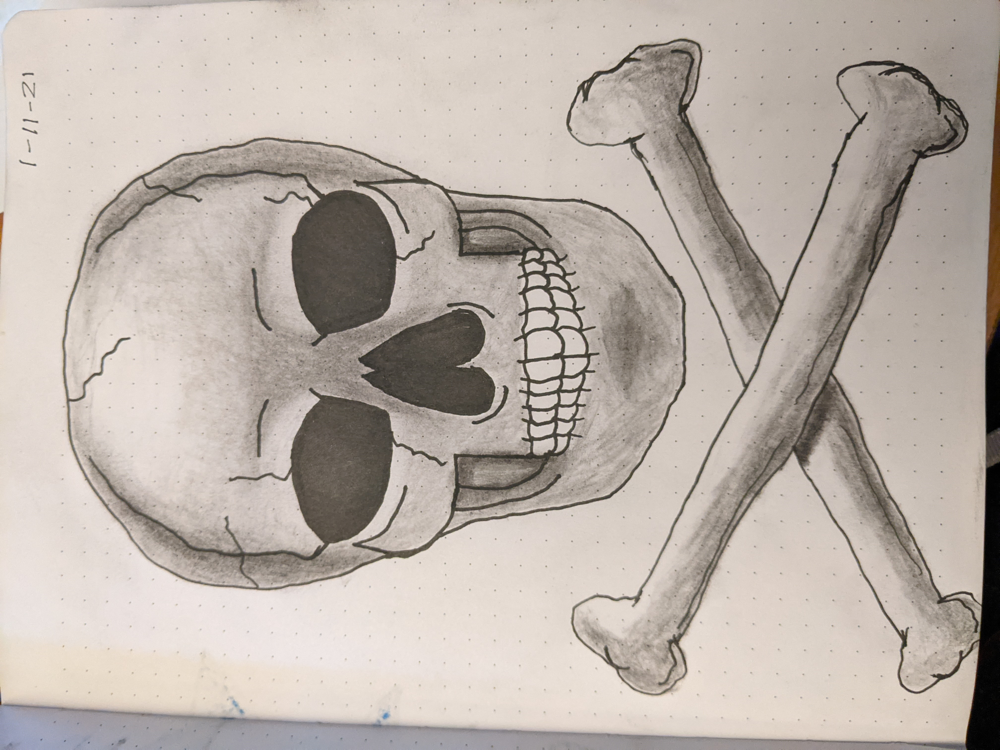
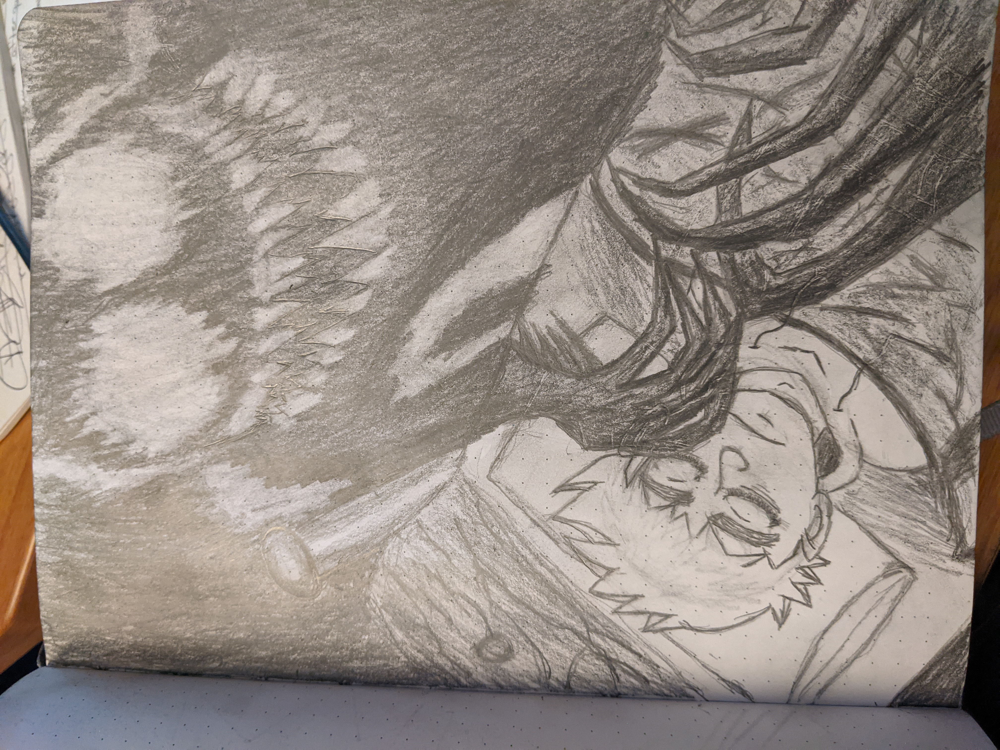
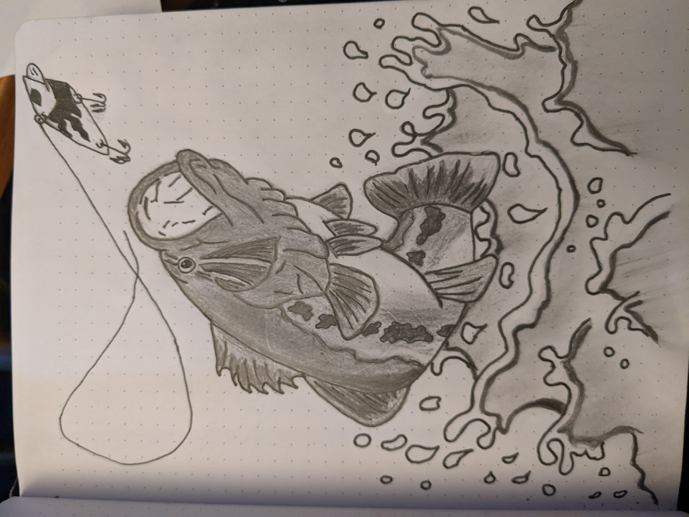

J-Rod's Sketchbook
Page One
My first attempt at drawing a skull and shading. I followed this turtorial from a YouTube video, and this was the result.
Page Two
This is my idea of what lurks in the night, the "SHADOW MONSTER."
Page Three
Fishing is one of my favorite hobbies. So I decided to take a stab at drawing one of my favorite fish to catch, the largemouth bass.
